OSM is a database, not a map
Jorge Sanz
- @xurxosanz
- Engineer at CartoDB
- OSGeo member
- Geoinquietos Valencia organizer
- Casual mapper on OSM
First part
What's OpenStreetMap?
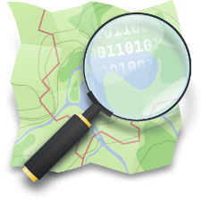What's OpenStreetMap
- Open Source and Open Data
enthusiasts community -
A project to create the best
geographic reference world database - An Internet map?
- ¡No! ¡There's many!
-
But not just maps, there's a huge ecosystem
of companies and services around OSM

Edit
But Google Maps...
- API: ads, usage restrictions, ...
- MapMaker: «your work is ours» (being retired!)

Open Database License
- OSM official license since Sept, 2012,
previously CC-BY-SA - Developed by the OKFN
- Shortly:
- You can: share, create, adapt
- If you: attribute, share-alike, always open
History 1/3
- 2004 - Steve Coast starts OpenStreetMap as an answer
to the high pricing of the Ordnance Survey data - 2006 - OpenStreetMap Foundation starts operating,
non profit organization in England - 2006 - Yahoo! grants their imagery to be used by OSM
- 2007 - Automotive Navigation Data donates their data
for Netherlands, India and China - 2007 - TIGER USO dataset is totally imported
- 2007 - 9.000 registered users
History 2/3
- 2008 - CloudMade donates 2,4M$ to the OSMF
- 2008 - 45.000 registered users
- 2008 - GeoBase.ca donates their public dataset
- 2009 - 0.6 version of the API. 200.000 users
- 2010 - Haiti earthquake. In just two days OSM is
consideredthe best digital map of the country - 2010 - Bing Maps grants to use their imagery
History 3/3
- 2011 - +500.000 users. +1.000.000.000 nodes
- 2012 - License change to ODbl, #swith2osm campaign
- 2012 - Many companies switching to OSM:
Foursquare, Craiglist, Apple,... - 2013 - One million users. After Yolanda Typhoon
OSM community shows its importance on humanitarian tasks - 2014 - +1.5M users. OSM goes mainstream
- 2015 - 2 million users
Figures
- 3.2M users
- 5.426M GPS points
- 3.592M nodes
- 375M ways
- 4,5M relations
- Source (2016/11/13)
Comparing...

Source: GeoFrabrik Tools

Source: GeoFrabrik Tools

Source: GeoFrabrik Tools
Source: GeoFrabrik Tools
HOT
Humanitarian OpenStreetMap Team
- Created after Haiti earthquake (2010/01)
- Training and outreach in development zones
- Mostly remote mapping
- Development projects in Nepal, Malawi,
Indonesia, Nigeria, ...


Tacloban ·
wiki · changes map
4.8M changes in less than 3 weeks!
Second part
How to contribute to OSM

Main workflow
- Data collection
- OSM upload
GPS data collection

Field Papers

Mapping party

Getting ready
Mapping party
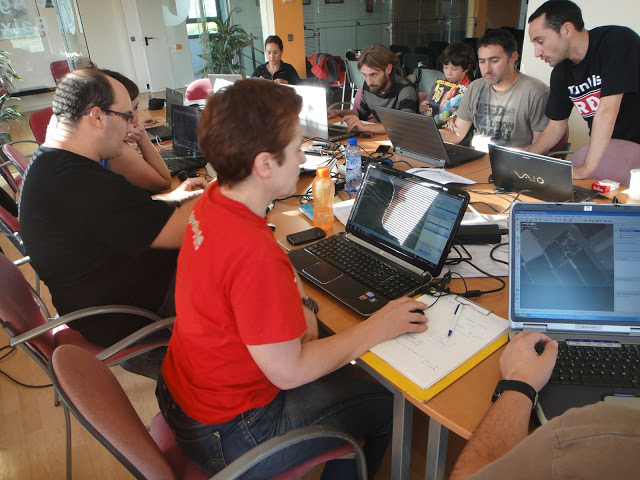Back to the office for editing
OSM editors
- iD
- JavaScript (d3js)
- used directly at OSM site
- casual or basic editors
- JOSM
- desktop, Java
- lots of features, plugins, etc
- advanced users
- ... and many more (even for mobile devices)
Almería Arts school in JOSM
Third part
Data in OSM

OSM data model
- Topological instead of features
- Graphic primitives
- Nodes
- Ways (if they are closed they may be an area)
- Alphanumeric attributes
- Relations
- Labels
Labels
- Provide semantic to the graphic primitives
and relations - Crowsourced and edited at the wiki

Nodes
- Relevant attributes: id, latitude y longitude, creator and version
- Content: labels
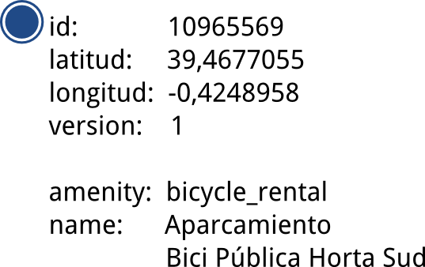
<node id="1035862914" visible="true" version="1"
changeset="6637923" timestamp="2010-12-12T16:07:17Z"
user="Schumi4ever" uid="83942"
lat="36.8371080" lon="-2.4644590">
<tag k="natural" v="tree"/>
</node>
Ways
- Attributes: id, user, version
- Content: list of nodes and labels
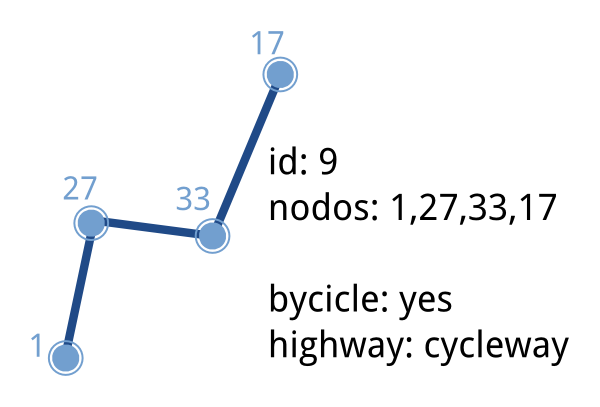
<way id="159010347" visible="true" version="2"
changeset="21196864" timestamp="2014-03-19T18:09:16Z"
user="XuRxO" uid="13409">
<nd ref="1711177810"/> <nd ref="1711177809"/>
<-- más nodos... -->
<nd ref="1711177808"/> <nd ref="1711177812"/>
<nd ref="1711177810"/>
<tag k="addr:city" v="Almería"/>
<tag k="addr:postcode" v="04001"/>
<tag k="addr:street" v="Plaza Pablo Cazard"/>
<tag k="amenity" v="college"/>
<tag k="building" v="school"/>
<tag k="name" v="Escuela de Bellas Artes"/>
<tag k="phone" v="+34950156158"/>
<tag k="website" v="http://www.andalucia.org/...."/>
</way>
Relations
- Attributes: id, visible, user and timestamp
- Content
- Members: id, type and relation role
- Labels

<relation id="2545358" visible="true" version="9" ...>
<member type="node" ref="2306864392" role="stop"/>
<member type="node" ref="2306864403" role="stop"/>
<!-- más paradas ... -->
<member type="way" ref="204274848" role="forward"/>
<member type="way" ref="23290865" role="forward"/>
<!-- más vías ... -->
<tag k="colour" v="black"/>
<tag k="name" v="Casco Histórico"/>
<tag k="operator" v="SURBUS"/>
<tag k="ref" v="1"/>
<tag k="route" v="bus"/>
<tag k="type" v="route"/>
<tag k="wheelchair" v="yes"/>
</relation>
Fourth part
OSM for developers

OSM API
- Only mean to modify data
- v0.6 since 2009
- RESTful
- Anonymous queries,
updates using OAuth - Versioning
- Downloads limited
to 15' squares - It focuses on editing not downloading
<osm version="0.6" generator="OpenStreetMap server">
<api>
<version minimum="0.6" maximum="0.6"/>
<area maximum="0.25"/>
<tracepoints per_page="5000"/>
<waynodes maximum="2000"/>
<changesets maximum_elements="50000"/>
<timeout seconds="300"/>
</api>
</osm>
<osm version="0.6" generator="OpenStreetMap server">
<node id="933346497" lat="41.5827283" lon="2.013415"
version="3" changeset="8211372" user="Jaume Figueras"
uid="55987" visible="true" timestamp="2011-05-21T22:26:13Z">
<tag k="ref" v="FIXME"/>
<tag k="network" v="Xarxa d'autobusos Urbans de Terrassa"/>
<tag k="covered" v="no"/>
<tag k="tactile_paving" v="yes"/>
<tag k="bench" v="yes"/>
<tag k="public_transport" v="platform"/>
<tag k="highway" v="bus_stop"/>
<tag k="uic_ref" v="FIXME"/>
<tag k="uic_name" v="FIXME"/>
<tag k="name" v="Arenys de Mar"/>
<tag k="shelter" v="yes"/>
<tag k="operator" v="TMESA"/>
<tag k="layer" v="0"/>
</node>
</osm>
<osm version="0.6" generator="OpenStreetMap server">
<node id="933346497" lat="41.5827339" lon="2.0134288" changeset="5928981"
user="Jaume Figueras" uid="55987" visible="true" timestamp="2010-10-01T15:46:00Z" version="1">
<tag k="highway" v="bus_stop"/>
<tag k="shelter" v="yes"/>
<tag k="name" v="Arenys de Mar"/>
<tag k="tactile_paving" v="yes"/>
<tag k="bench" v="yes"/>
</node>
<node id="933346497" lat="41.5827339" lon="2.0134288" changeset="8167041"
user="Jaume Figueras" uid="55987" visible="true" timestamp="2011-05-16T21:38:38Z" version="2">
<tag k="highway" v="bus_stop"/>
<tag k="shelter" v="yes"/>
<tag k="network" v="Xarxa d'autobusos Urbans de Terrassa"/>
<tag k="name" v="Arenys de Mar"/>
<tag k="ref" v="FIXME"/>
<tag k="uic_name" v="FIXME"/>
<tag k="tactile_paving" v="yes"/>
<tag k="layer" v="0"/>
<tag k="covered" v="no"/>
<tag k="public_transport" v="platform"/>
<tag k="uic_ref" v="FIXME"/>
<tag k="bench" v="yes"/>
<tag k="operator" v="TMESA"/>
</node>
<node id="933346497" lat="41.5827283" lon="2.013415" changeset="8211372"
user="Jaume Figueras" uid="55987" visible="true" timestamp="2011-05-21T22:26:13Z" version="3">
<tag k="highway" v="bus_stop"/>
<tag k="shelter" v="yes"/>
<tag k="network" v="Xarxa d'autobusos Urbans de Terrassa"/>
<tag k="name" v="Arenys de Mar"/>
<tag k="ref" v="FIXME"/>
<tag k="uic_name" v="FIXME"/>
<tag k="tactile_paving" v="yes"/>
<tag k="layer" v="0"/>
<tag k="covered" v="no"/>
<tag k="public_transport" v="platform"/>
<tag k="uic_ref" v="FIXME"/>
<tag k="bench" v="yes"/>
<tag k="operator" v="TMESA"/>
</node>
</osm>
<osm version="0.6" generator="OpenStreetMap server">
<changeset id="8211372" user="Jaume Figueras"
uid="55987" created_at="2011-05-21T22:26:04Z"
closed_at="2011-05-21T22:26:17Z" open="false"
min_lat="41.5617613" min_lon="2.0082875"
max_lat="41.5859881" max_lon="2.0241229">
<tag k="comment" v="Bus de Terrassa - Línia 7 adaptada al nou esquema i arranjaments varis"/>
<tag k="created_by" v="JOSM/1.5 (4064 en)"/>
</changeset>
</osm>
<?xml version="1.0" encoding="UTF-8"?>
<osm version="0.6" generator="CGImap 0.0.2">
<bounds minlat="41.5617613" minlon="2.0082875"
maxlat="41.5859881" maxlon="2.0241229"/>
<node id="282873786" lat="41.5803041" lon="2.0268698"
user="Jaume Figueras" uid="55987" visible="true"
version="5" changeset="1576508" timestamp="2009-06-20T17:59:37Z">
<tag k="highway" v="traffic_signals"/>
</node>
<node id="282873797" lat="41.5805069" lon="2.0266905"
user="Jaume Figueras" uid="55987" visible="true"
version="6" changeset="5858775" timestamp="2010-09-23T23:30:09Z">
<tag k="highway" v="traffic_signals"/>
</node>
....
http://api.openstreetmap.org/api/0.6/map?bbox=2.0082875,41.5617613,2.0241229,41.5859881
1.6MB download
Data update
- PUT /api/0.6/changeset/create
- PUT /api/0.6/changeset/#id/close
- PUT /api/0.6/[N|W|R]/create
- DELETE /api/0.6/[N|W|R]/#id
Other queries
- GET /api/0.6/[N|W|R]/#id/relations
- GET /api/0.6/node/#id/ways
- GET /api/0.6/[W|R]/#id/full
Other derived services
- Main derived product is called the
planet
- Full DB export: 53GB in a single compressed XML
- Weekly, day, hour and minute diffs
- Overpass API aimed for queries
- User interface to create queries: Overpass Turbo
- taginfo: API for labels usage statistics
- Nominatim: geocoder
- Other providers using OSM data like Mapbox, Mapzen, OSRM, etc.
Renderers
Fifth part
Who does not love maps?
Official

Biking
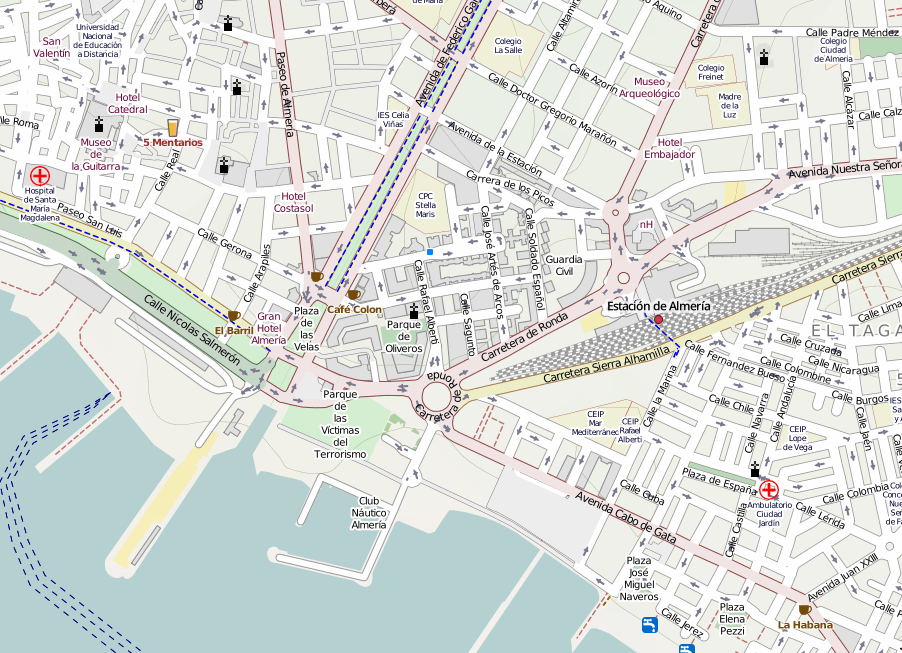Transport
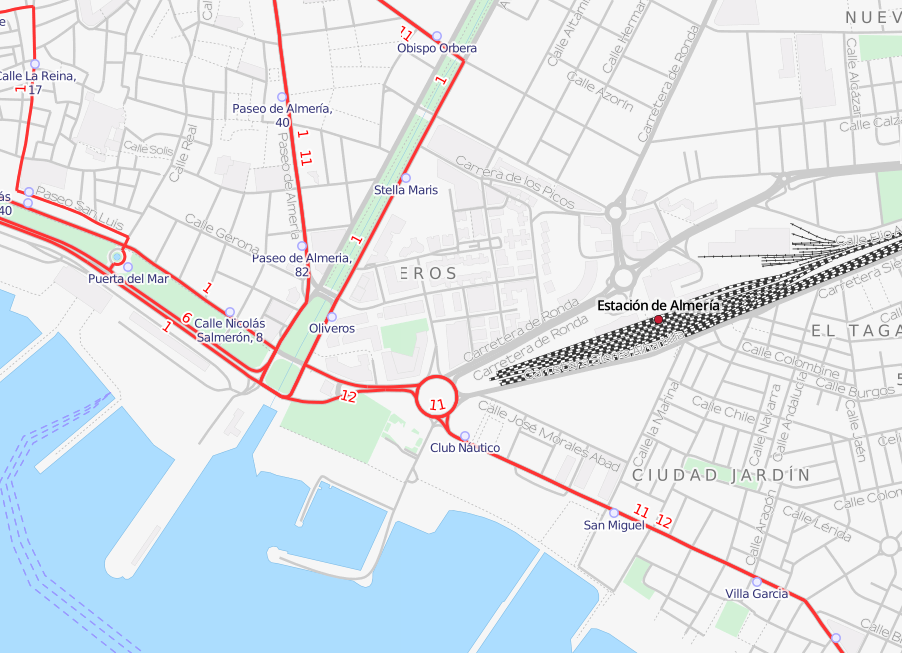HOT
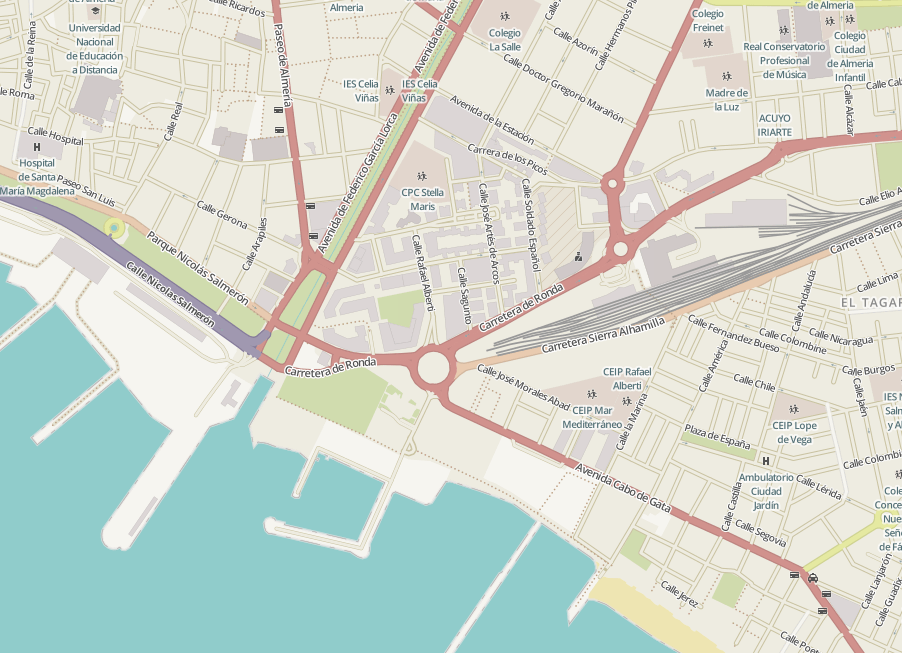But this is just the beginning
Stamen
Watercolor
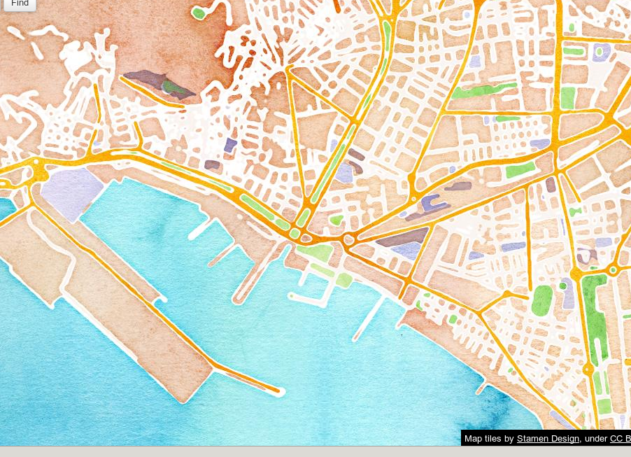Toner

Mapbox
Pinterest style
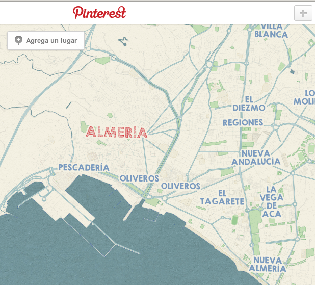Foursquare style
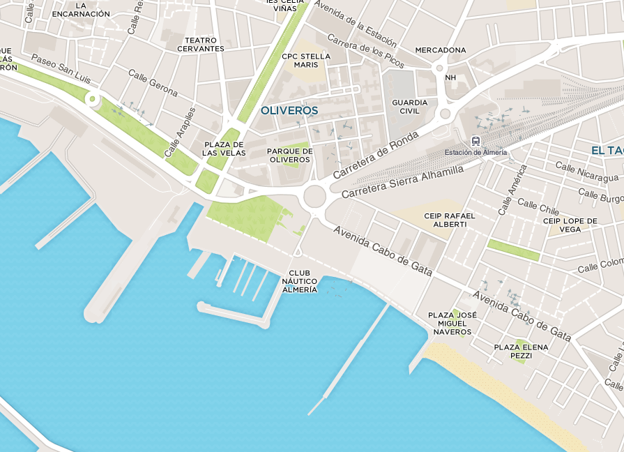Random
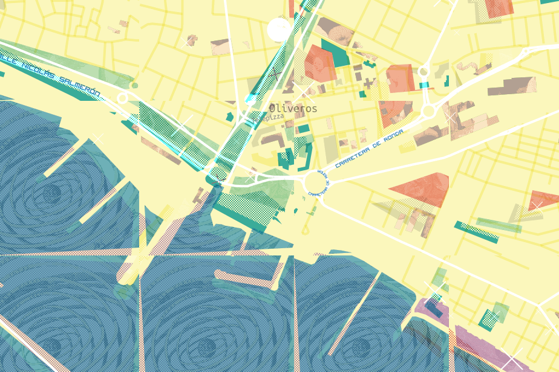CARTO
Positron
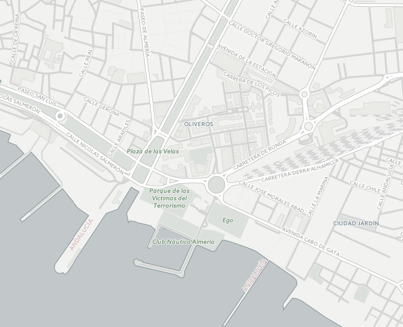Dark Matter
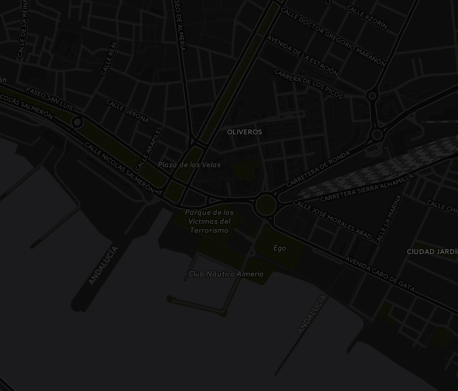Thanks!
Jorge Sanz · @xurxosanz
Links and resources
http://bit.ly/jsanz-osm

License

OSM no es un mapa, es una base de datos by Jorge Sanz is licensed under a Creative Commons Attribution-ShareAlike 4.0 International License.